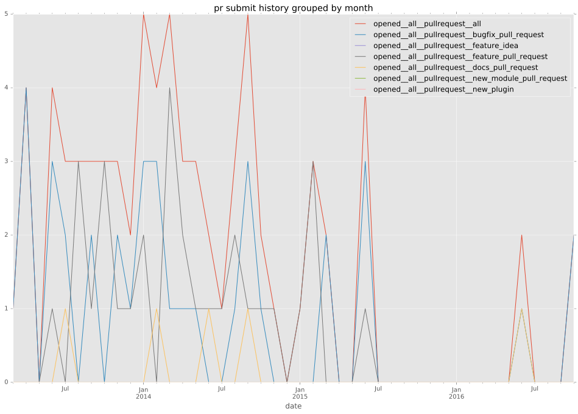
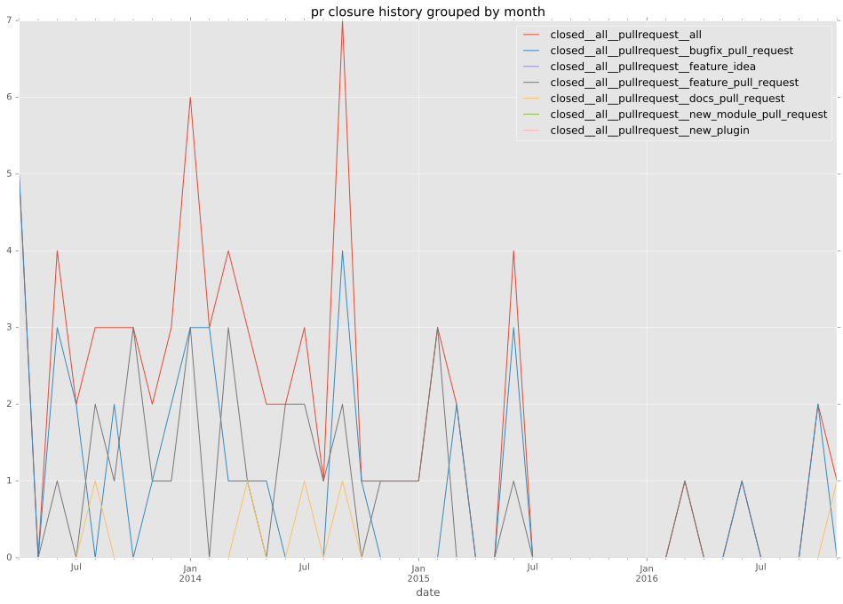

authors
- j2sol
- sivel
maintainers
- j2sol
- sivel
contributors
- adejongh : 2 commits
- EvanDotPro : 1 commits
- risaacson : 3 commits
- asmajlovic : 2 commits
- sivel : 194 commits
- jpmens : 2 commits
- Hypermanzer : 6 commits
- immanetize : 1 commits
- jctanner : 15 commits
total issue counts
unknown: 1
feature pull request: 36
pullrequest: 81
docs pull request: 5
bugfix pull request: 39
feature idea: 4
issue: 18
bug report: 14
issue history
pullrequest history


days open by issue type
bugfix pull request
count: 66
std: 4.67239076183
min: 0
max: 20
median: 0.0
mean: 2.21212121212
all
count: 146
std: 72.6837319743
min: 0
max: 590
median: 0.0
mean: 17.7397260274
pullrequest
count: 0
std: nan
min: nan
max: nan
median: nan
mean: nan
docs pull request
count: 7
std: 19.0175357675
min: 0
max: 40
median: 8.0
mean: 19.0
feature pull request
count: 56
std: 87.2604234089
min: 0
max: 590
median: 1.0
mean: 28.2678571429
feature idea
count: 4
std: 55.9136238616
min: 0
max: 118
median: 14.0
mean: 36.5
issue
count: 0
std: nan
min: nan
max: nan
median: nan
mean: nan
bug report
count: 11
std: 172.189113794
min: 0
max: 572
median: 0.0
mean: 52.9090909091
closures grouped by total days open